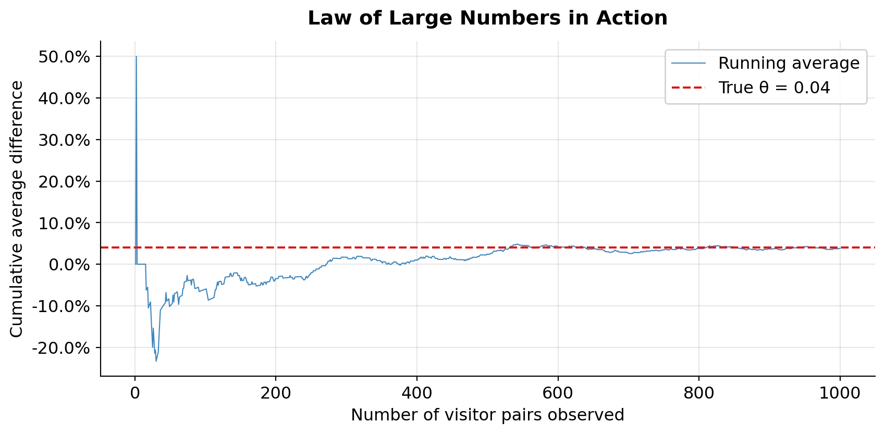
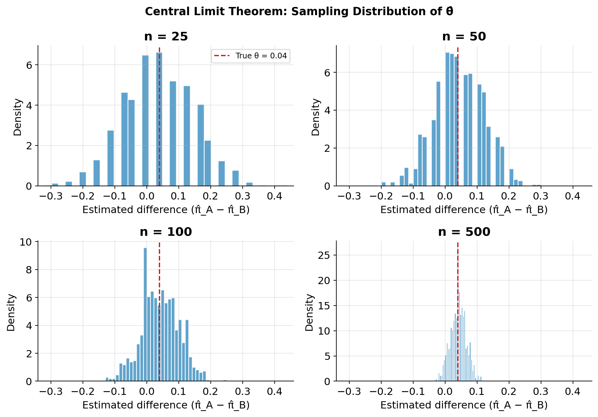
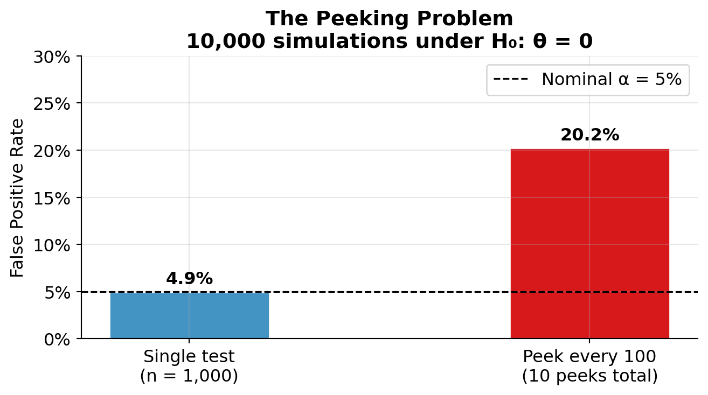

Simulating Key Ideas from Classical Frequentist Statistics
Statistics
Python
A/B Testing
Exploring the Law of Large Numbers, Bootstrap, CLT, and hypothesis testing through a simulated A/B test on website CTAs.
Author
Jiahui Huang
Published
April 14, 2025
Introduction
Every website that cares about growth has a call to action (CTA) — a short phrase inviting visitors to take a next step, like signing up for a newsletter. Small wording changes can have surprisingly large effects on behavior, which raises a natural question: how do we figure out which wording actually works best?
In this post, I’ll walk through exactly that question using a newsletter sign-up form as our running example. Our homepage shows visitors one of two CTAs:
CTA A: “Sign up for our newsletter here!”
CTA B: “Stay up to date by signing up!”
To decide which performs better, we run an A/B test: visitors are randomly assigned to see one version or the other, and we track who signs up. Random assignment is the key — it ensures that any difference in sign-up rates can be attributed to the CTA wording itself, not to differences in the visitors who happened to see each version.
Along the way, we’ll connect this practical problem to some of the most fundamental ideas in classical frequentist statistics: the Law of Large Numbers, the Bootstrap, the Central Limit Theorem, and hypothesis testing. We’ll also reveal a hidden equivalence between a t-test and linear regression, and explore why peeking at results mid-experiment can quietly destroy the validity of your conclusions.
The A/B Test as a Statistical Problem
Each visitor to our website either signs up (outcome = 1) or doesn’t (outcome = 0). This binary outcome is naturally modeled as a draw from a Bernoulli distribution. If visitor \(i\) sees CTA A, their outcome \(X_i \sim \text{Bernoulli}(\pi_A)\), where \(\pi_A\) is the true (unknown) probability that a visitor signs up. Similarly, visitors seeing CTA B have outcomes drawn from \(\text{Bernoulli}(\pi_B)\).
The quantity we ultimately care about is the difference in sign-up rates:
\[\theta = \pi_A - \pi_B\]
A positive \(\theta\) means CTA A outperforms CTA B; negative means the opposite; and \(\theta = 0\) means no real difference.
Since we can’t observe \(\pi_A\) and \(\pi_B\) directly, we estimate \(\theta\) from data using the difference in sample proportions:
The rest of this post is about understanding the behavior of this estimator: when can we trust it, how precise is it, and when can we conclude that any observed difference is real rather than random noise?
Simulating Data
In a real A/B test, we would not know the true values of \(\pi_A\) and \(\pi_B\) — that’s precisely why we’re running the test. But for the purpose of this analysis, we’ll set the true values ourselves so we can study how our estimator behaves when we know the ground truth.
We set \(\pi_A = 0.22\) and \(\pi_B = 0.18\), so the true effect is \(\theta = 0.04\): CTA A yields 4 more sign-ups per 100 visitors. We simulate 1,000 visitors per group (2,000 total).
Our observed difference is close to the true value of 0.04. But how reliably will this estimator land near the truth — and why?
The Law of Large Numbers
The Law of Large Numbers (LLN) tells us that as we collect more data, the sample mean converges to the true population mean. In our setting, \(\hat\pi_A \to \pi_A\) and \(\hat\pi_B \to \pi_B\) as sample size grows — and therefore \(\hat\theta \to \theta\). The LLN is the foundational reason we trust our estimator at all: given enough data, it will get arbitrarily close to the truth.
We can see this convergence directly. For each visitor \(i\), compute the difference \(X_{A,i} - X_{B,i}\) (pairing A and B observations by index). Then watch the running average of those differences evolve as we accumulate more observations.
Code
differences = group_A - group_Bcumulative_mean = np.cumsum(differences) / np.arange(1, n +1)fig, ax = plt.subplots(figsize=(9, 4.5))ax.plot(range(1, n +1), cumulative_mean, color="#2c7bb6", linewidth=0.8, alpha=0.9, label="Running average")ax.axhline(y=0.04, color="#d7191c", linestyle="--", linewidth=1.5, label="True θ = 0.04")ax.set_xlabel("Number of visitor pairs observed")ax.set_ylabel("Cumulative average difference")ax.set_title("Law of Large Numbers in Action", fontweight="bold", pad=12)ax.legend(framealpha=0.9)ax.yaxis.set_major_formatter(plt.FuncFormatter(lambda x, _: f"{x:.1%}"))plt.tight_layout()plt.show()

The running average of the estimated difference converges to the true value of 0.04 as sample size grows.
The plot tells a clear story. With just a handful of observations, the running average bounces around wildly — a single lucky or unlucky signup can swing the estimate dramatically. But as the sample grows, the noise averages out and the estimate settles close to the true value of 0.04. This is the LLN at work.
Bootstrap Standard Errors
Knowing that our estimator converges to the truth is reassuring, but it doesn’t tell us how precise it is for our specific sample. To communicate uncertainty, we want a confidence interval — a range of plausible values for \(\theta\).
The bootstrap gives us an elegant, assumption-light way to estimate this uncertainty. The core idea: we don’t know the true population, but our sample is our best approximation of it. So we treat the sample as a stand-in for the population and repeatedly resample from it with replacement, computing our statistic on each resample. The variability across those resampled estimates approximates the true sampling variability of our estimator.
The two standard errors are nearly identical — which is reassuring: the bootstrap is recovering the same uncertainty estimate as the closed-form formula, without needing to know that formula.
Using the bootstrap standard error, our 95% confidence interval for \(\theta\) is:
\[\hat\theta \pm 1.96 \times \widehat{SE}\]
Since this interval lies entirely above zero, our data are consistent with CTA A generating more sign-ups than CTA B. The interval also tells us the advantage is modest (around 4 percentage points), which may or may not be practically meaningful depending on traffic volume.
The Central Limit Theorem
The Central Limit Theorem (CLT) is arguably the most important result in statistics. It tells us that regardless of the shape of the underlying population distribution, the sampling distribution of the sample mean becomes approximately Normal as the sample size grows. Even though each individual observation is a 0 or 1 (very non-Normal), the average of many such observations is approximately bell-shaped for large \(n\).
To see this in action, we simulate the sampling distribution of \(\hat\theta\) for four different sample sizes.

Sampling distribution of the estimated difference at four sample sizes. The distribution becomes increasingly bell-shaped as n grows — the CLT in action.
At \(n = 25\), the histogram is jagged and wide — we’re averaging so few observations that any individual experiment can land far from the truth. By \(n = 100\), a bell shape is clearly visible, and by \(n = 500\), the distribution is tight and nearly perfectly Normal, centered right on the true \(\theta = 0.04\). This is the CLT: the underlying Bernoulli randomness gets “averaged away,” and the estimator’s sampling distribution becomes Gaussian.
Hypothesis Testing
Now that we know the sampling distribution of \(\hat\theta\) is approximately Normal (thanks to the CLT), we can use this to perform a formal hypothesis test.
We set up two competing hypotheses:
Null hypothesis\(H_0: \theta = 0\) — the two CTAs produce the same sign-up rate
Alternative hypothesis\(H_1: \theta \neq 0\) — the CTAs perform differently
The goal is to assess whether our observed \(\hat\theta\) is surprising enough — given the null — to constitute convincing evidence against \(H_0\).
Why we standardize. Under \(H_0\), \(\hat\theta\) is approximately Normal with mean 0. Dividing by its standard error gives us a standard Normal random variable:
This standardization matters because we now know exactly what distribution our test statistic follows under the null — which is what we need to compute a p-value.
A note on t-test vs. z-test. This procedure is often called a t-test. The classical t-test arises when data are Normal and variance is estimated — then the ratio follows an exact t-distribution. Our data are Bernoulli (not Normal), so we rely on the CLT for approximate Normality. For large samples, the t-distribution and standard Normal are nearly indistinguishable, so the practical difference is negligible.
Point estimate (θ̂): 0.0380
Standard error: 0.0178
z-statistic: 2.1388
p-value (two-sided): 0.0325
With a p-value below 0.05, we reject the null hypothesis at the 5% significance level: our data provide statistically significant evidence that CTA A and CTA B differ in their sign-up rates. The z-statistic tells us the observed difference is more than 1.96 standard errors away from zero — far enough to be considered statistically unusual under the null.
The T-Test as a Regression
Here’s a surprising fact: the two-sample test we just ran is mathematically equivalent to a simple linear regression. This connection matters because regression is a much more flexible framework — it generalizes naturally to multiple treatment arms, control variables, and interaction effects.
The setup. Stack the CTA A and CTA B data into a single dataset. Each row represents a visitor with:
\(Y_i \in \{0, 1\}\): did visitor \(i\) sign up?
\(D_i \in \{0, 1\}\): did visitor \(i\) see CTA A (1) or CTA B (0)?
Fit the regression: \(Y_i = \beta_0 + \beta_1 D_i + \varepsilon_i\)
The coefficients have clean interpretations:
\(\beta_0 = E[Y_i \mid D_i = 0]\) — mean outcome for CTA B visitors, i.e., \(\hat\pi_B\)
\(\beta_0 + \beta_1 = E[Y_i \mid D_i = 1]\) — mean outcome for CTA A visitors, i.e., \(\hat\pi_A\)
Therefore \(\beta_1 = \pi_A - \pi_B = \theta\), and \(\hat\beta_1\) is numerically identical to \(\hat\theta\)
The regression coefficient on \(D_i\) matches our earlier \(\hat\theta\) exactly. The t-statistic and p-value are very close to those from the two-sample test — a small difference arises because OLS assumes a pooled variance, while our z-test used separate variance estimates per group.
The real power of this equivalence: once you’ve framed your A/B test as a regression, you can extend it with minimal effort — add user demographic controls to increase precision, interaction terms to test heterogeneous effects, or additional treatment arms as extra indicator variables.
The Problem with Peeking
Imagine your boss is eager for results. Rather than waiting for all 1,000 visitors, she proposes checking the results after every 100 visitors per group — peeking 10 times in total, and stopping early if any peek yields a significant result (p < 0.05).
This sounds reasonable. What’s the harm in looking?
The problem is subtle but serious. Each individual test at \(\alpha = 0.05\) has a 5% false positive rate. But when you conduct multiple tests on accumulating data, each peek is another opportunity to get a false positive. We can quantify this with a simulation where the null hypothesis is exactly true: \(\pi_A = \pi_B = 0.20\), so \(\theta = 0\) and there is genuinely no difference.
Code
np.random.seed(99)pi_null =0.20n_total =1000peeks = np.arange(100, n_total +1, 100)n_sims =10000def run_peeking_experiment(): A = np.random.binomial(1, pi_null, n_total) B = np.random.binomial(1, pi_null, n_total)for peek in peeks: a, b = A[:peek], B[:peek] pa, pb = a.mean(), b.mean() se = np.sqrt(pa*(1-pa)/peek + pb*(1-pb)/peek)if se ==0:continue p =2* stats.norm.sf(abs((pa - pb) / se))if p <0.05:returnTruereturnFalsedef run_single_experiment(): A = np.random.binomial(1, pi_null, n_total) B = np.random.binomial(1, pi_null, n_total) pa, pb = A.mean(), B.mean() se = np.sqrt(pa*(1-pa)/n_total + pb*(1-pb)/n_total) p =2* stats.norm.sf(abs((pa - pb) / se))return p <0.05fp_peek = np.mean([run_peeking_experiment() for _ inrange(n_sims)])fp_single = np.mean([run_single_experiment() for _ inrange(n_sims)])print(f"Single test false positive rate: {fp_single:.1%}")print(f"Peeking false positive rate: {fp_peek:.1%}")
Single test false positive rate: 4.9%
Peeking false positive rate: 20.2%

Empirical false positive rates under the null (10,000 simulations). Peeking inflates the error rate well above the nominal 5%.
The results are stark. A single test at the end of the experiment correctly maintains a ~5% false positive rate. But the peeking strategy has a false positive rate roughly three times the nominal level. In practice, this means a large fraction of your “significant” results — when there’s truly no effect — will be false alarms. You’ll be making decisions based on statistical noise.
The fix isn’t to never look at your data early. It’s to use methods designed for sequential testing, such as alpha spending functions or sequential probability ratio tests, which maintain the false positive rate across multiple looks. Classical frequentist testing, applied naively with peeking, quietly breaks one of its own core guarantees.